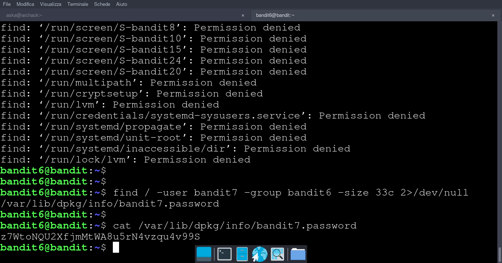

Obiettivo di livello
La password per il livello successivo è memorizzata da qualche parte sul server e ha tutte le seguenti proprietà:
di proprietà dell'utente bandit7 di proprietà del gruppo bandit6 33 byte di dimensione
Comandi di cui potresti aver bisogno per risolvere questo livello
ls, cd , cat , file , du , find
Soluzione livello 6
ci connettiamo con ssh alla porta 2220 e user bandit6 con passowrd del livello 5
oppure scarichiamo il nosto script da Github e avviamolo con python3 ssh_bandit.py bandit6
attraverso il comando find diamo
- / per dire che cominciamo a cercare dalla root directory
- -type f per dire che cerchiamo un file
- -user bandit7 per dire che il file che cerchiamo e di proprieta dell'utente bandit7
- -group bandit6per dire che il file che cerchiamo e di proprietà del gruppo 6
- -size 33cper comunicare di voler trovare solo i file con dimensione 33 Byte (la c per specificare Byte)
- 2>/dev/null per dire che tutto il flusso di errore(stderr, rappresentato
dal file descriptor 2)
viene indirizzato tutto /dev/null, cosi facendo non ci fa visualizzare gli errori di permessi errati
passwd: z7WtoNQU2XfjmMtWA8u5rN4vzqu4v99S